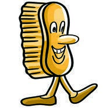
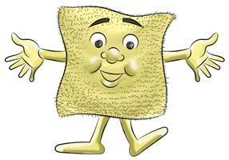
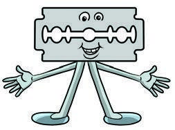
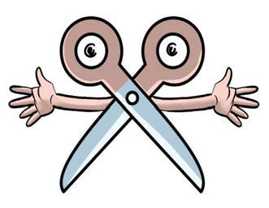
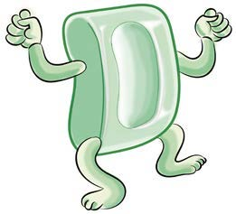

Page 18
I am a brush, I scrub your hands and fingernails.
I am a towel, use me to dry your hands.


I am a razor blade. I am not a friend of long nails; I cut them.
I am a pair of scissors. I am not a friend of long nails; I cut them.



I am soap, use me to remove dirt from your hands.